Welcome to the New Era of Scientific Publishing
Tobias Kuhn
VU Amsterdam
http://www.tkuhn.org
IOS Press 35 Year Anniversary, 31 March 2022
These slides: https://tinyurl.com/ios35era
The Scientific Knowledge Cloud
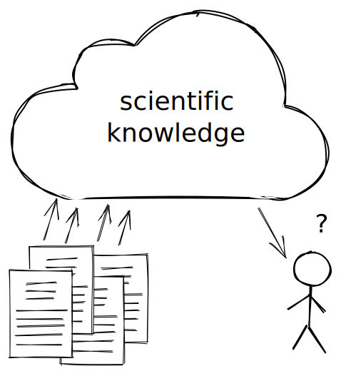Task for a Developer:
Retrieve all genes that have been found to play a role in a part of the respiratory system in Covid-19 patients. Only include results from randomized controlled trials published in the last seven days.
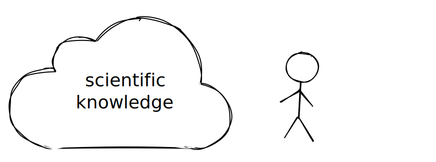Task for a Developer:
Retrieve all genes that have been found to play a role in a part of the respiratory system in Covid-19 patients. Only include results from randomized controlled trials published in the last seven days.
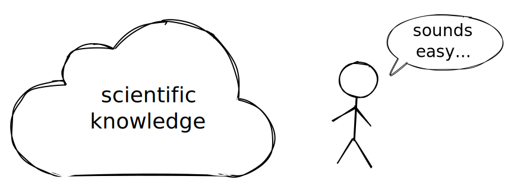Problem: Scientific Results are Represented in Plain Text Only
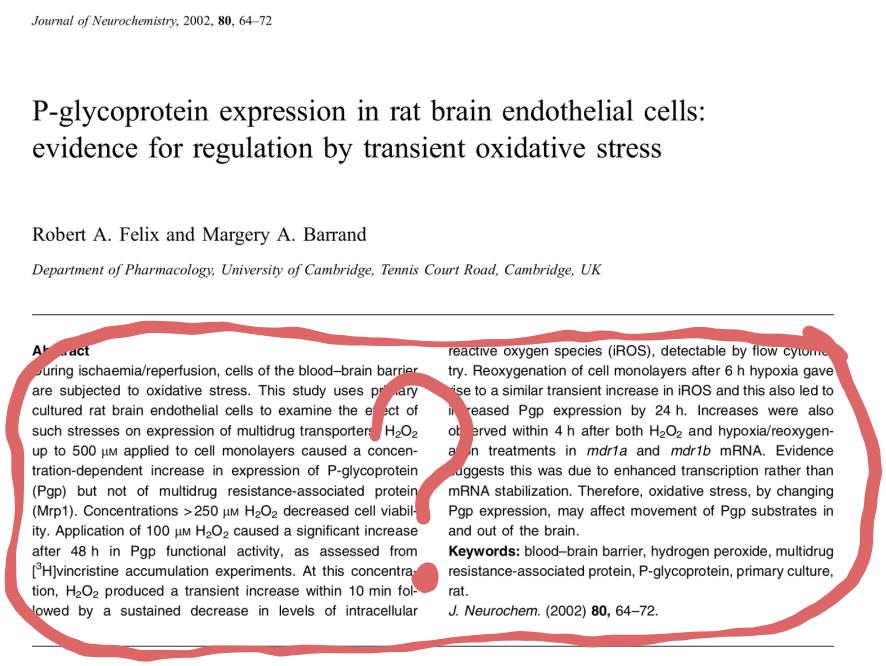Problem: Scientific Results are Represented in Plain Text Only
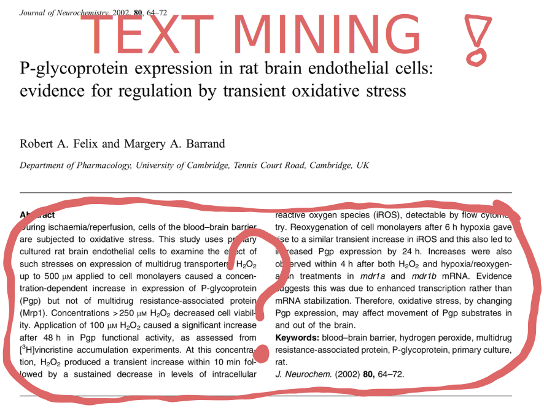Text Mining in 2015: Not Good Enough
Chemical-disease relation extraction:
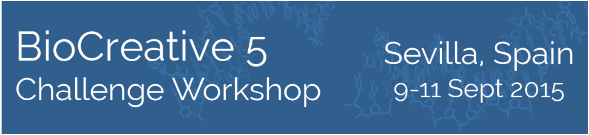 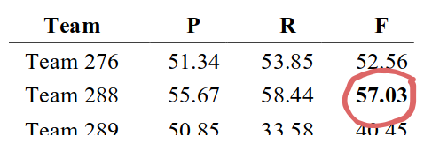
Drug-gene relation type extraction:
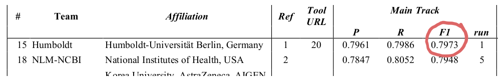Named entity recognition/linking of chemicals:
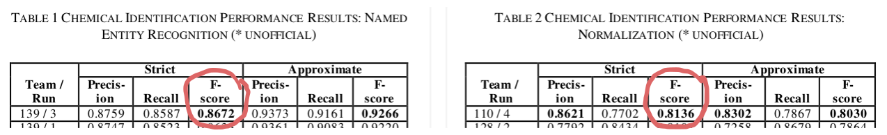Still Not Good Enough (by far)
Back-of-the-envelope calculation:
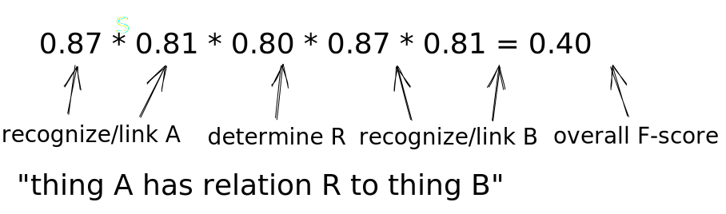Around 60% of retrieved relations are wrong and 60% of existing relations are not retrieved.
"Text mining? ... Why bury it first and then mine it again?" (Barend Mons)

Publishing without Burying
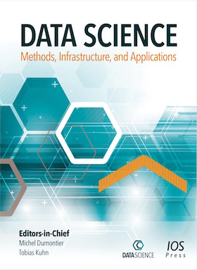- Idea: Let authors publish the main findings of their papers in a machine-interpretable manner right away
- Field Study with Special Issue at Data Science
How can we Formally Represent Scientific Findings?
Let's check main findings from 75 random articles across disciplines:
Formally Representing Findings: Super Pattern
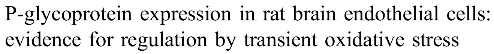- Context class: rat brain endothelial cell
- Subject class: transient oxidative stress
- Qualifier: generally
- Relation: affects
- Object class: Pgp expression
Main Findings from 75 Random Articles across Disciplines
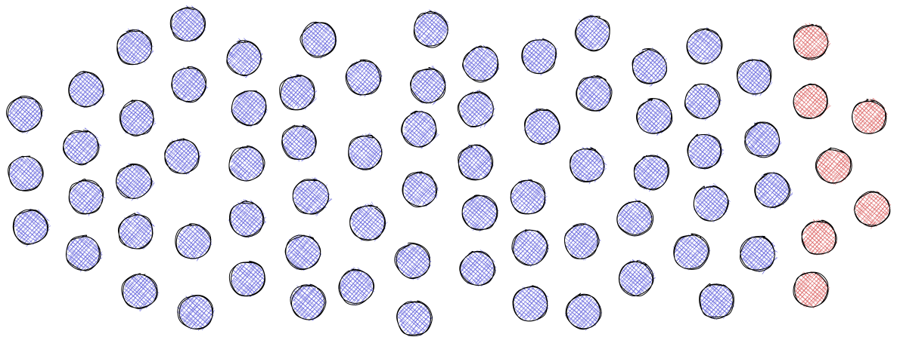- 68 can be represented with the super pattern!
- Remaining 7 are simple subject-predicate-object statements
Formalization Papers
- Formalization paper: A paper whose novel contribution is the formalization of an existing finding
- First step towards the vision of publishing formalized original findings
- Represented as nanopublications
Publishing Formalization Papers as Nanopublications: Assertion
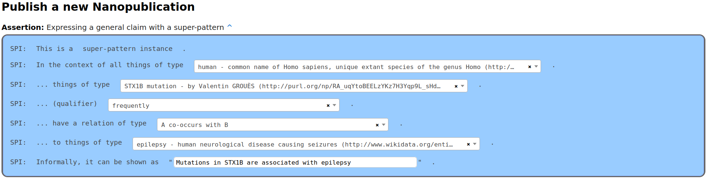Publishing Formalization Papers as Nanopublications: Metadata
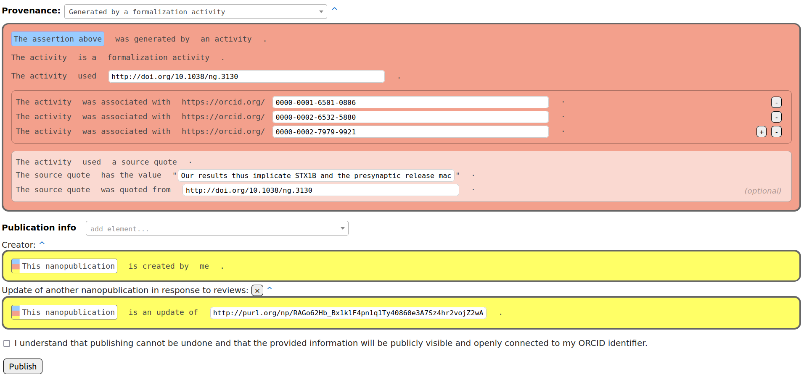15 Formalization Papers
Formalization Paper (What Humans See)
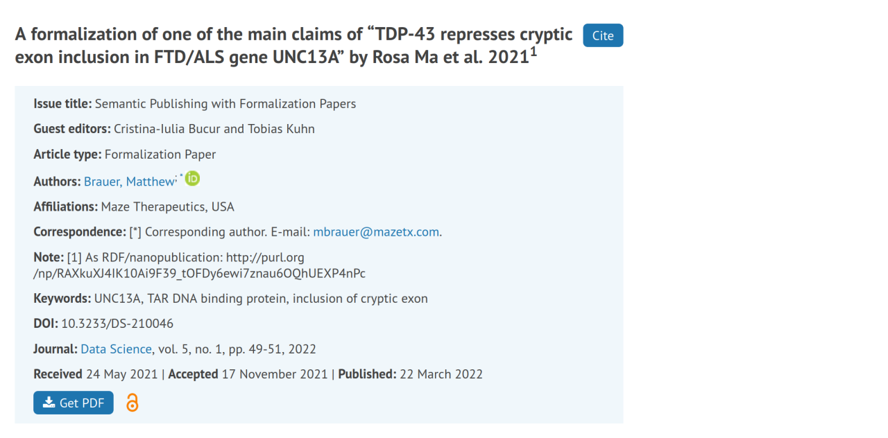Formalization Paper (What Humans See)
Formalization Paper (What Humans See)
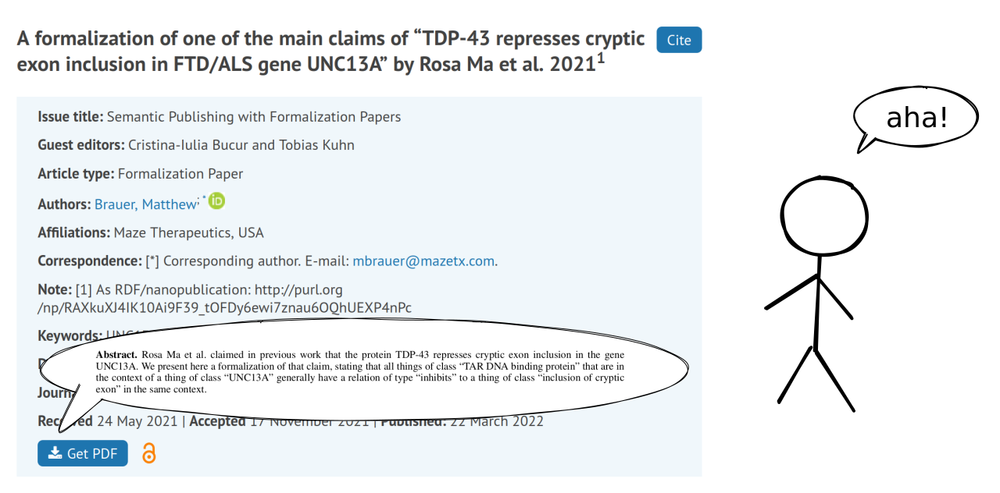Formalization Paper (What Humans See)
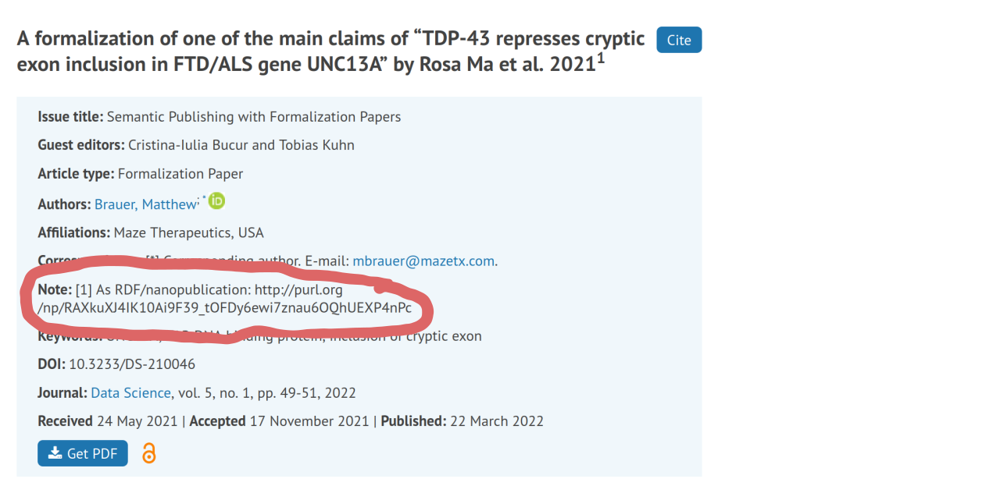Formalization Paper (What Machines See)
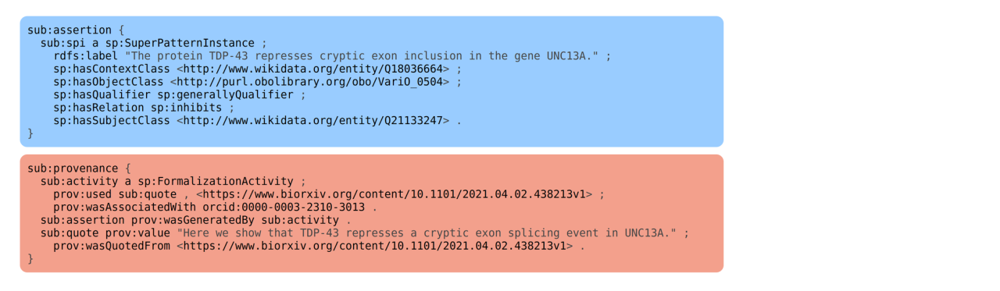Formalization Paper (What Machines See)
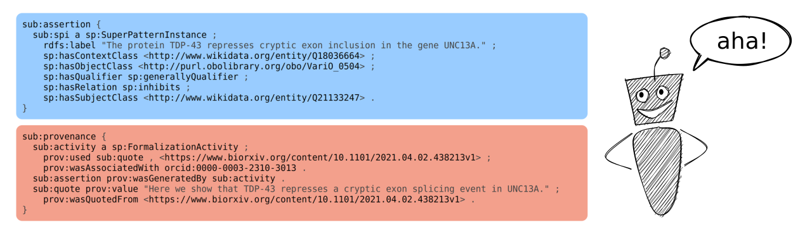Welcome to the New Era of Scientific Publishing!
These slides: https://tinyurl.com/ios35era
References/Links:
- Cristina-Iulia Bucur, Tobias Kuhn, Davide Ceolin, Jacco van Ossenbruggen. Expressing high-level scientific claims with formal semantics. In Proceedings of K-CAP '21. ACM, 2021.
- Cristina-Iulia Bucur, Tobias Kuhn, Davide Ceolin, Jacco van Ossenbruggen. Nanopublication-Based Semantic Publishing and Reviewing: A Field Study with Formalization Papers. arXiv 2203.01608, 2022.
- Special Issue: https://content.iospress.com/journals/data-science/5/1
- Nanobench: https://github.com/peta-pico/nanobench